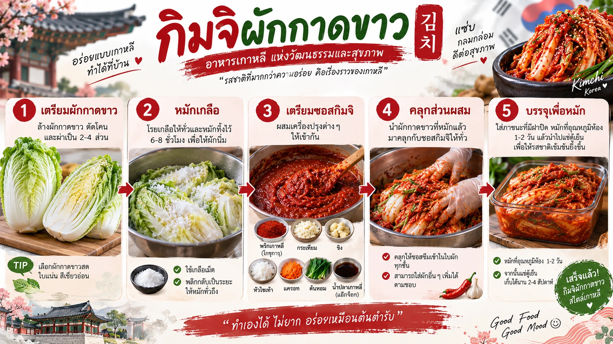
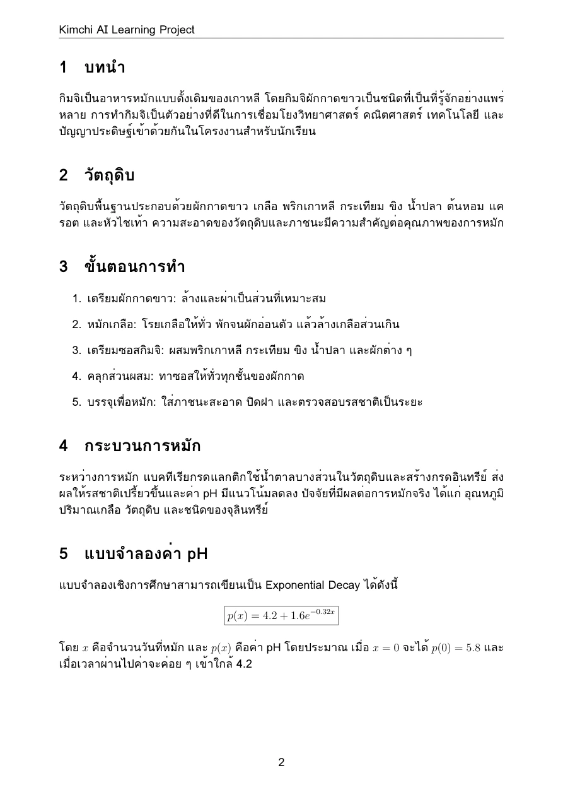
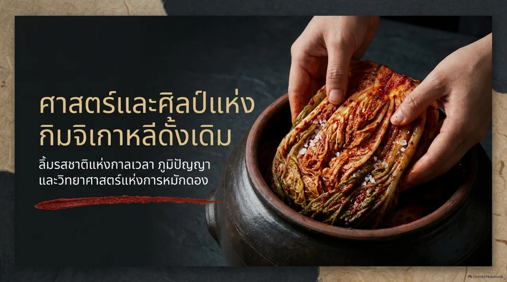

{kind=link}
กำหนดเนื้อหา
ระบุ 5 ขั้นตอนให้ครบและเรียงจากซ้ายไปขวา
SPICY CULTURE
SMART LEARNING
จากการทำกิมจิแบบดั้งเดิม สู่การเรียนรู้ผ่าน Generative AI, Mathematical Modeling, Mermaid, LaTeX, NotebookLM และการเผยแพร่เว็บไซต์บน GitHub Pages ในโปรเจกต์เดียว
โครงงานการเรียนรู้ที่เชื่อมโยง อาหารเกาหลี วิทยาศาสตร์ คณิตศาสตร์ การออกแบบสื่อ และ AI เข้าไว้ด้วยกัน ตั้งแต่การสร้างภาพกิมจิ ไปจนถึงการสร้างบทความและสไลด์ด้วยเครื่องมือ AI
Image Generation / Desmos / Mermaid / LaTeX / NotebookLM / GitHubจากข้อความสั้น ๆ สู่ Infographic ที่สื่อสารได้ชัดเจน
เปลี่ยน Prompt ให้เป็น Infographic การทำกิมจิ
ส่วนนี้สามารถสลับดู Prompt แรกและ Prompt ล่าสุด พร้อมภาพผลลัพธ์ Before / After ได้โดยตรง
ใช้ Generative AI สร้างภาพอาหารแบบ realistic ผสม Infographic เพื่ออธิบาย 5 ขั้นตอนหลักให้เข้าใจง่ายในภาพเดียว
สร้างภาพเกี่ยวกับการทำกิมจิผักกาดขาวแบบเกาหลี แสดงวัตถุดิบและขั้นตอนการทำกิมจิ ให้ภาพดูสวยงามและสมจริง
ให้ AI ตีความองค์ประกอบและรูปแบบเอง ยังไม่กำหนดจำนวนขั้นตอนหรือสัดส่วนภาพ
สร้างภาพ Infographic อธิบายขั้นตอนการทำกิมจิผักกาดขาวแบบเกาหลี จำนวน 5 ขั้นตอน ได้แก่ เตรียมผักกาดขาว หมักเกลือ เตรียมซอสกิมจิ คลุกส่วนผสม และบรรจุเพื่อหมัก จัดองค์ประกอบจากซ้ายไปขวา ใช้ภาพอาหารแบบ realistic ผสม infographic สไตล์เกาหลี โทนสีแดง ขาว และเขียว ฉากหลังสะอาด เหมาะสำหรับงานนำเสนอของนักเรียน อัตราส่วน 16:9
5 ขั้นตอน · ลำดับซ้ายไปขวา · กลุ่มผู้อ่าน · โทนสี · สัดส่วน 16:9

AI-generated artwork · ภาพเดิมจากโครงงาน ไม่ใช่ภาพแคปหน้าจอของเครื่องมือ และควรตรวจทานข้อความก่อนนำไปใช้
ระบุ 5 ขั้นตอนให้ครบและเรียงจากซ้ายไปขวา
ใช้ภาพอาหาร realistic ร่วมกับองค์ประกอบ infographic
โทนแดง ขาว เขียว ฉากสะอาด และอ่านง่ายสำหรับนักเรียน
อธิบายการเปลี่ยนแปลงค่า pH ด้วย Exponential Decay
เปลี่ยนระยะเวลาการหมักให้เป็นเรื่องราวที่มองเห็นได้
ได้แนวคิดสมการ Exponential Decay แต่โจทย์ยังเปิดกว้าง ทำให้ AI ต้องเลือกค่าเริ่มต้น ช่วงเวลา และพารามิเตอร์หลายส่วนเอง
ล็อกเงื่อนไขสำคัญชัดขึ้น: x = 0–14 วัน, pH เริ่มประมาณ 5.8, เข้าใกล้ 4.2, ใช้ Exponential Decay พร้อมอธิบายตัวแปรและนำไปใช้ใน Desmos ได้ทันที
แบบจำลองนี้ใช้เพื่อการเรียนรู้ โดยกำหนดค่าเริ่มต้นประมาณ 5.8 และลดลงเร็วในช่วงแรก ก่อนค่อย ๆ เข้าใกล้ประมาณ 4.2
สมการและข้อมูลนี้เป็นแบบจำลองเชิงการศึกษา ไม่ใช่ผลการทดลองจริง และไม่ใช้ประเมินความปลอดภัยอาหาร
กราฟวาดจากสมการโดยตรง ไม่ใช่ Screenshot จาก Desmos
ค่าเริ่มต้นของแบบจำลอง
ลดลงอย่างชัดเจนจากจุดเริ่มต้น
ค่อย ๆ เข้าใกล้ค่าปลายทาง 4.2
| วันหมัก | pH โดยประมาณ | แนวโน้ม |
|---|---|---|
| 0 | 5.80 | ค่าเริ่มต้น |
| 2 | 5.04 | ลดลงค่อนข้างเร็ว |
| 4 | 4.64 | ลดลงค่อนข้างเร็ว |
| 6 | 4.43 | ลดลงช้าลง |
| 8 | 4.32 | ลดลงช้าลง |
| 10 | 4.27 | เข้าใกล้ 4.2 |
| 12 | 4.23 | เข้าใกล้ 4.2 |
| 14 | 4.22 | เข้าใกล้ 4.2 |
ได้ Flowchart แบบสั้นที่เรียงขั้นตอนหลักต่อกัน เหมาะกับการมองภาพรวม แต่ยังไม่มีขั้นตอนย่อยหรือเงื่อนไขย้อนกลับ
ได้ Flowchart ที่ละเอียดขึ้น ตั้งแต่วัตถุดิบถึงการเก็บรักษา และมี Decision Point “รสชาติได้ตามต้องการหรือยัง?” พร้อมเส้นทางหมักต่อหรือแช่เย็น
มองกระบวนการทั้งหมดด้วย Mermaid Flowchart
แผนภาพแสดงตั้งแต่การเตรียมวัตถุดิบไปจนถึงการเก็บรักษา พร้อม Decision Point หลังการหมัก
เตรียมวัตถุดิบ ล้างและผ่าผักกาดขาว หมักเกลือ แล้วล้างเกลือและพักให้สะเด็ดน้ำ
เตรียมซอส คลุกให้ทั่วผักกาดขาว และบรรจุลงภาชนะสะอาด
หมักกิมจิและทบทวนรสชาติ ถ้ายังไม่ถึงเป้าหมายให้หมักต่อ ถ้าได้แล้วให้นำไปแช่เย็นและเก็บรักษา
“รสชาติได้ตามต้องการ
หรือยัง?”
ผังนี้สรุปตรรกะเพื่อการเรียนรู้ การได้รสชาติตามต้องการไม่ได้ยืนยันความปลอดภัยของอาหาร
flowchart TD
A([เริ่มต้น]) --> B[เตรียมวัตถุดิบ]
B --> C[ล้างและผ่าผักกาดขาว]
C --> D[หมักเกลือ]
D --> E[ล้างเกลือและพักให้สะเด็ดน้ำ]
E --> F[เตรียมซอสกิมจิ]
F --> G[คลุกซอสกับผักกาดขาว]
G --> H[บรรจุลงภาชนะสะอาด]
H --> I[หมักกิมจิ]
I --> J{รสชาติได้ตามต้องการหรือยัง?}
J -- ยัง --> K[หมักต่ออีกระยะหนึ่ง]
K --> I
J -- ได้แล้ว --> L[นำไปแช่เย็น]
L --> M([เก็บรักษาและรับประทาน])
classDef prep fill:#FFFDF9,stroke:#D5D2C8,color:#242320,rx:12,ry:12;
classDef ferment fill:#FBEFEA,stroke:#B8322A,color:#7D201D,rx:12,ry:12;
classDef decision fill:#FAF0D2,stroke:#C6AC60,color:#242320;
classDef cold fill:#EAF0E6,stroke:#78936C,color:#365D3B,rx:12,ry:12;
class A,B,C,D,E,F,G,H prep;
class I,K ferment;
class J decision;
class L,M cold;
linkStyle default stroke:#78936C,stroke-width:1.2px;
ได้บทความ LaTeX พื้นฐานเรื่องกิมจิ มีหัวข้อหลักและเนื้อหาอ่านได้ แต่ยังไม่ได้กำหนดโครงสร้างเอกสารสำหรับงานส่งอย่างละเอียด
ได้ข้อกำหนดเอกสารชัดเจนสำหรับ Overleaf/XeLaTeX ทั้ง Title, Abstract, สารบัญ, สมการ, ตาราง pH, พื้นที่ Infographic, Mermaid Flowchart และบทสรุป

PDF03 PAGESเปลี่ยนองค์ความรู้ให้เป็นบทความวิชาการ
เอกสารสรุปหัวข้อการทำกิมจิ กระบวนการหมัก แบบจำลองค่า pH การประยุกต์ใช้ AI และ Reflection พร้อมไฟล์ต้นฉบับ LaTeX
เก็บไฟล์ PDF และ LaTeX ต้นฉบับเดิมไว้โดยไม่เปลี่ยนเนื้อหา
* ภาพ Infographic และ Flowchart แสดงประกอบในเว็บไซต์นี้
สรุปโครงงานเป็น Slide สำหรับการนำเสนอ
AI-assisted knowledge synthesis
เปรียบเทียบจากไฟล์ผลลัพธ์จริงที่แนบมา: fristprompt.pdf และ finalprompt.pdf

PAGE 01 / 15 Open PDFPrompt แรก ขอให้ค้นและสรุปเป็นสไลด์แบบกว้าง ๆ จึงได้ Deck 15 หน้าในแนวเล่าเรื่องวัฒนธรรมและศาสตร์ของกิมจิ ส่วน Prompt ล่าสุด ระบุจำนวน 6–8 สไลด์ บทบาท โครงสร้างทีละสไลด์ รูปแบบ Output และโทนภาษา ทำให้ผลลัพธ์ 8 หน้าโฟกัสขั้นตอนการทำตามโครงสร้างที่กำหนดมากขึ้น
จัดโครงสร้างเนื้อหาให้สั้น กระชับ และมี Storyline เพื่อเปลี่ยนบทความและข้อมูลจากโครงงานให้เป็นสไลด์นำเสนอ
แนวทางใช้งาน: ใช้บทความและข้อมูลโครงงานเป็นแหล่งอ้างอิง แล้วตรวจทาน Storyline สมการ และข้อความก่อนนำเสนอ
ดาวน์โหลดสไลด์โครงงานเดิม (.pptx)เราจะอธิบายการหมักกิมจิให้เข้าใจง่ายได้อย่างไร?
ใช้ภาพ Flowchart สมการ และบทความสนับสนุนแนวคิด
สะท้อนว่าการปรับ Prompt ทำให้คุณภาพผลงานเปลี่ยนอย่างไร
เปลี่ยนผลงานทั้งโครงงานให้เป็นเว็บไซต์ Static ที่เปิดได้จริงบน GitHub Pages โดยไม่ต้องมี Backend
Section นี้แสดงการพัฒนา Prompt สำหรับสร้างเว็บไซต์และนำผลงานไปเผยแพร่บน GitHub Pages
ได้เว็บไซต์ Static พื้นฐานที่มี HTML, CSS และ JavaScript สามารถนำไฟล์ขึ้น Repository และเปิดผ่าน GitHub Pages ได้ แต่โครงสร้างภาพลักษณ์และ Storytelling ยังเรียบง่าย
ได้เว็บไซต์ Portfolio แบบ Responsive รวม Image Generation, Mathematics, Mermaid, LaTeX, NotebookLM และ GitHub Publishing ไว้ในหน้าเดียว พร้อม Asset ภายในโฟลเดอร์และโครงสร้างที่ GitHub Pages เปิดได้โดยตรง
เว็บไซต์นี้ไม่ต้องใช้ฐานข้อมูลหรือ Server-side framework จึงเหมาะกับ GitHub Pages: อัปโหลดไฟล์ทั้งหมดขึ้น Repository แล้วตั้งค่า Pages ให้เผยแพร่จาก Branch main ได้เลย
Learning project with a spicy twist.
kimchi-ai-portfolio/
├── index.html
├── style.css
├── script.js
├── .nojekyll
└── assets/
├── images/
├── diagrams/
├── pdf/
└── slides/
git init
git add .
git commit -m "Publish Kimchi AI portfolio"
git branch -M main
git remote add origin https://github.com/USERNAME/REPOSITORY.git
git push -u origin mainจากนั้นเปิด GitHub → Settings → Pages → เลือก Deploy from a branch → main → /(root) → Save
การสร้างเว็บไซต์ไม่ได้จบที่การให้ AI เขียนโค้ด แต่ต้องคิดต่อเรื่อง โครงสร้างไฟล์, Responsive Design, Path ของ Assets, การทดสอบก่อน Deploy และการเผยแพร่จริง จึงทำให้ผลงานจากเครื่องมือ AI ทั้งหมดถูกรวมเป็น Portfolio ที่ผู้อื่นเปิดดูได้จากลิงก์เดียว
จาก Zero-shot Prompt สู่ Few-shot Prompt
สิ่งที่เปลี่ยนไม่ใช่แค่ความยาวของ Prompt แต่คือระดับของ “บริบท” ที่เราให้ AI
สั่งงานโดยไม่มีตัวอย่าง
“สร้าง Infographic การทำกิมจิ”
ตัวอย่างเดิม: “สร้าง Infographic ขั้นตอนการทำกิมจิ 5 ขั้นตอน สำหรับนักเรียน”
เพิ่มบริบท ข้อกำหนด และตัวอย่างเพื่อกำหนดมาตรฐาน
“ตัวอย่าง 1: หัวข้อสั้น + ภาพ realistic + คำอธิบาย 1 บรรทัด
ตัวอย่าง 2: การ์ดขั้นตอนใช้เลขใหญ่และสีแดง...”
เป้าหมาย: เขียนคำอธิบายขั้นตอนทำกิมจิให้สั้นสำหรับนักเรียน ตัวอย่างที่ 1 Input: เตรียมผักกาดขาว Output: 01 | เตรียมผักกาดขาว | ล้างและผ่าเป็นส่วน ตัวอย่างที่ 2 Input: หมักเกลือ Output: 02 | หมักเกลือ | โรยเกลือ แล้วล้างและสะเด็ดน้ำ งานใหม่ Input: เตรียมซอสกิมจิ Output:
การเพิ่มรายละเอียดอย่างเดียวยังเป็น Structured Prompt; Few-shot ต้องมีตัวอย่างให้ AI เรียนรู้รูปแบบ ภาพ Before / After ด้านบนเปรียบเทียบ Prompt แรกกับ Structured Prompt ไม่ได้อ้างว่าเป็นผลการทดสอบ Few-shot โดยตรง อ่านหลักการจาก Google AI
คุณภาพของ AI ไม่ได้ขึ้นอยู่กับคำถามเพียงอย่างเดียว
THE KEY TAKEAWAY
แต่ขึ้นอยู่กับ Context และข้อกำหนด ที่เราให้กับ AI
บทเรียนสำคัญ: Prompt ที่ดีไม่ได้บอกเพียงว่า “ต้องการอะไร” แต่ควรช่วยให้ AI เข้าใจด้วยว่า “ผลลัพธ์ที่ดีควรมีหน้าตาอย่างไร” การเพิ่ม Few-shot Examples จึงช่วยลดการเดาโจทย์และทำให้ AI ทำงานตามมาตรฐานที่เรากำหนดได้มากขึ้น ทั้งนี้ยังต้องตรวจสอบผลลัพธ์ทุกครั้ง
One project.
Six learning tools.
One connected learning experience.
เมื่อเปิดผ่าน GitHub Pages ลิงก์ Repository จะถูกตั้งให้อัตโนมัติ หรือกำหนดเองได้ใน script.js